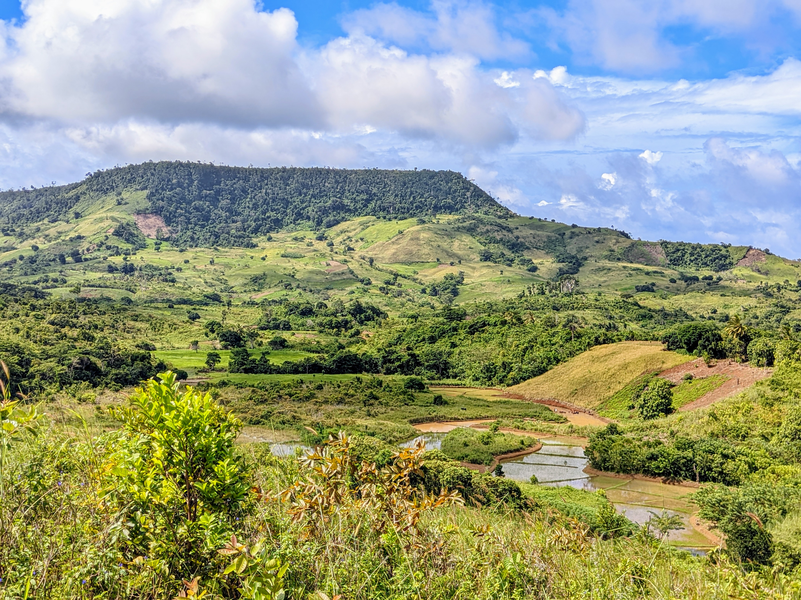
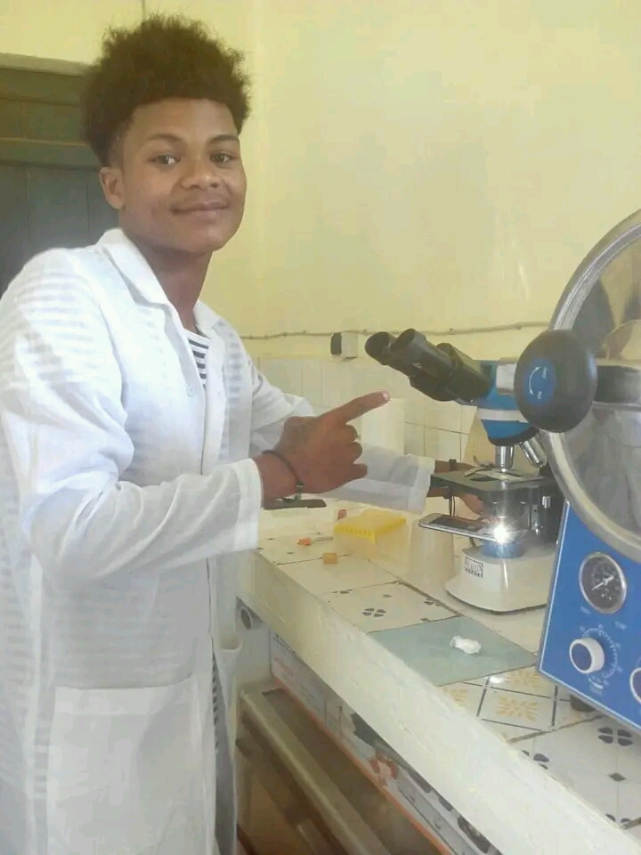
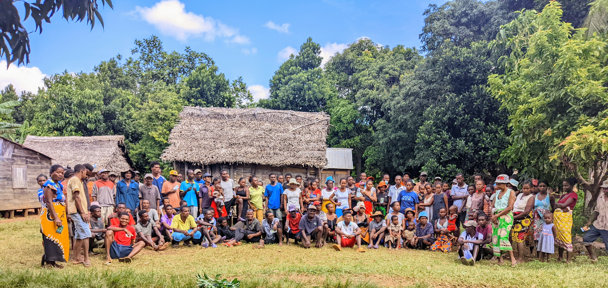

🌱
Agriculture
- Production agricole
- Conseil et accompagnement
- Gestion des exploitations

Animateur Rural • Technicien Agricole • Biochimiste
Technicien en biochimie alimentaire et valorisation des ressources naturelles.
Agir aujourd'hui pour une agriculture durable et un avenir meilleur.

Je suis RANDRIAMAROZANDRY Jean Roméo, passionné par le développement rural, l'agriculture durable et la valorisation des ressources naturelles. Avec une formation en biochimie alimentaire et une expérience de terrain, je m'engage à contribuer à des solutions innovantes pour améliorer la production agricole, la sécurité alimentaire et la préservation de notre environnement.


À travers mes activités de terrain, je participe à l'accompagnement des communautés locales, au développement des pratiques agricoles durables et à la protection des ressources naturelles dans la région SAVA.
📍 Ambanitaza – Fokontany Andrapengy, Commune Rurale Ampahana, Région SAVA, Madagascar
Organisation de formations destinées aux communautés locaux autour d'Ambanitaza et de la VOI Andrapengy sur les différentes étapes des cultures maraîchères, Agroforesterie et séchages.
Les formations ont été accompagnées par des activités pratiques permettant aux participants de mettre directement en application les techniques apprises et de produire les cultures présentées.
📍 Ambanitaza et les communautés environnantes – Région SAVA
Mise en place et renforcement de la collaboration entre les sept (07) comités communautaires autour d'Ambanitaza : Maromokotra, Andrapengy, Andasilava, Ampobe, Betaomby, Tsaratanana et Beamponga.
Les activités ont porté sur l'organisation de formations, la mise à disposition de matériels nécessaires à la production et l'accompagnement des communautés dans la réalisation de leurs besoins prioritaires.
Une distribution de volailles a également été réalisée afin de soutenir les activités d'élevages communautaires et de contribuer indirectement au renforcement de la protection de l'environnement.
📍 Ambanitaza – Région SAVA, Madagascar
Réalisation d'une opération de plantation de +20 000 plants d'arbres sur le montagne d'Ambanitaza, en collaboration avec les communautés vivant dans les zones environnantes.
Cette action vise à renforcer la restauration des espaces dégradés, à favoriser la participation communautaire et à contribuer durablement à la protection des ressources naturelles d'Ambanitaza.
Mise en place d'un système de pépinières et distribution de plants aux membres des associations communautaires autour d'Ambanitaza.
Cette démarche permet de responsabiliser chaque membre dans la production et l'entretien des plants destinés aux actions de restauration et de protection de l'environnement.
Contribution à la réalisation du transfert de gestion entre les communautés organisées au sein de la VOI et la Direction Régionale de l'Environnement et du Développement Durable (DREDD).
Cette démarche renforce la participation des communautés locales dans la gestion durable et la protection des ressources naturelles d'Ambanitaza.

Soutien aux producteurs locaux.
Qualité et sécurité alimentaire.
Agir pour l'environnement.
Découvrez mes travaux de recherche, publications scientifiques et travaux académiques dans les domaines de l'agriculture, de l'agroforesterie et de la valorisation des ressources naturelles.
 2026
2026
Cette publication analyse l’adoption de pratiques d’agroforesterie régénératrice dans le nord-est de Madagascar. Elle met en évidence les pratiques agricoles et environnementales favorisant la restauration des sols, l’amélioration de la productivité et le renforcement de la résilience des communautés rurales.
📄 Lire la publication Déc. 2025
Déc. 2025
Cette publication présente les résultats d’un programme mené en milieu rural à Madagascar visant à améliorer la sécurité alimentaire et à renforcer l’autonomisation des femmes. L’étude met en lumière les effets des interventions agricoles sur les moyens de subsistance et le développement communautaire.
📄 Lire la publication Déc. 2025
Déc. 2025
Cette étude évalue l’efficacité de différentes interventions agricoles mises en œuvre dans le nord-est de Madagascar. Elle s’intéresse notamment aux pratiques agricoles, à la production, à la sécurité alimentaire et aux conditions de vie des populations rurales.
📄 Lire la publication Déc. 2025
Déc. 2025
Ce mémoire porte sur les perspectives de valorisation des fruits de jacquier à travers leur transformation en produits alimentaires, notamment en jus et en chips. Il explore le potentiel de cette ressource locale pour la diversification des produits agroalimentaires et la création de valeur locale.
📄 Lire la publication
Vous avez un projet en agriculture, biochimie alimentaire ou valorisation des ressources naturelles ? Écrivez-moi.